"Introducing" types itself on the onboarding light.
The Kallo wordmark lands beside it.
"Introducing Kallo", centred.
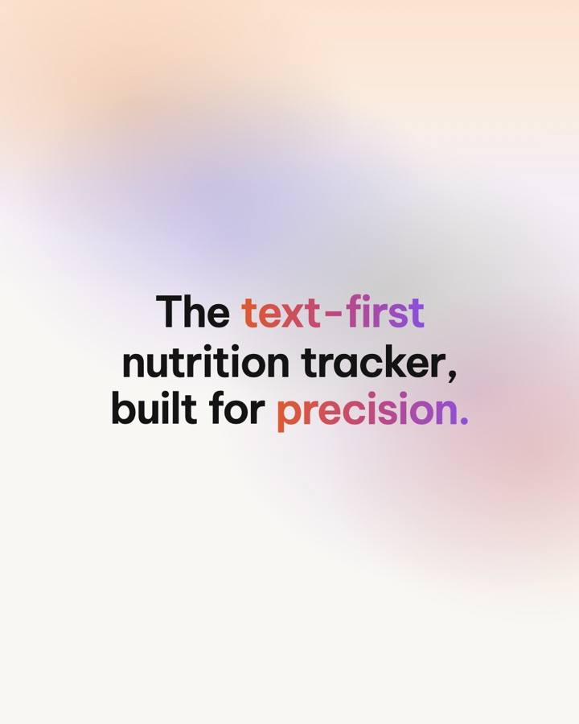
"The text-first nutrition tracker, built for precision."
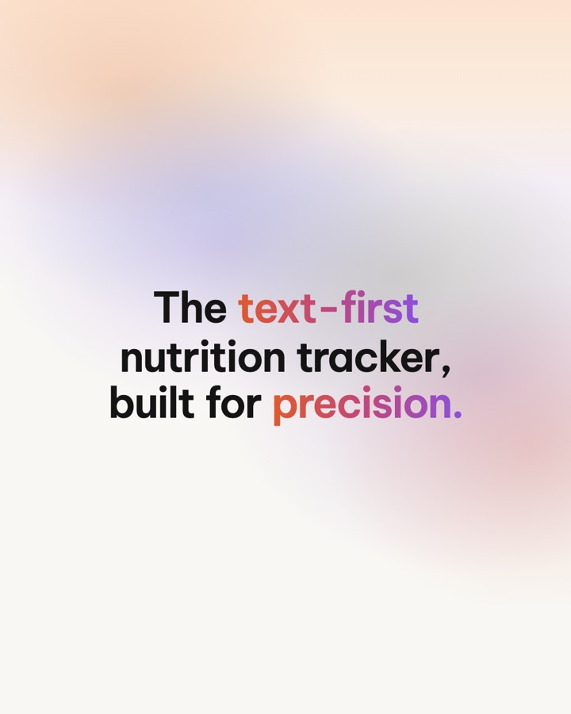
The line holds.
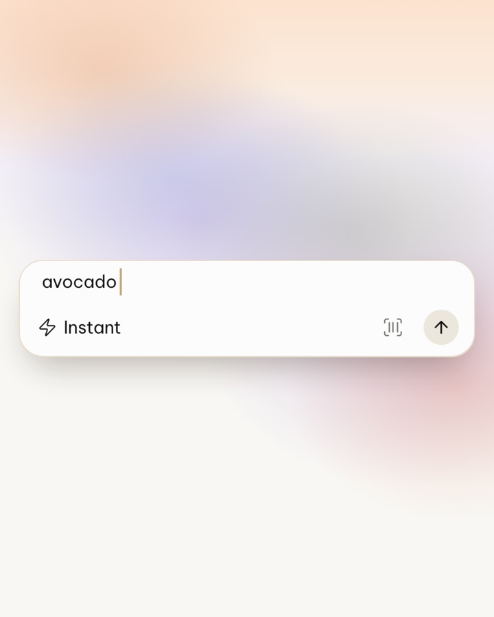
The real input box alone on the light: "avocado".
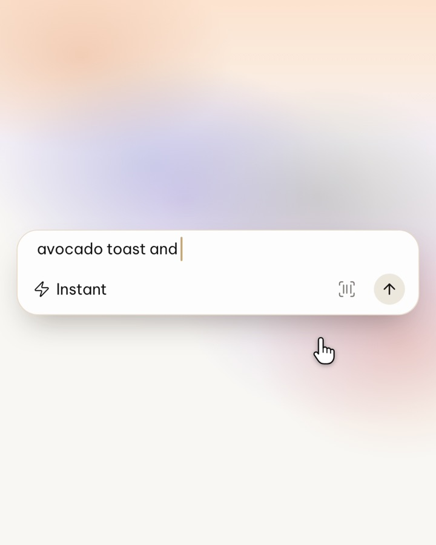
"avocado toast and"
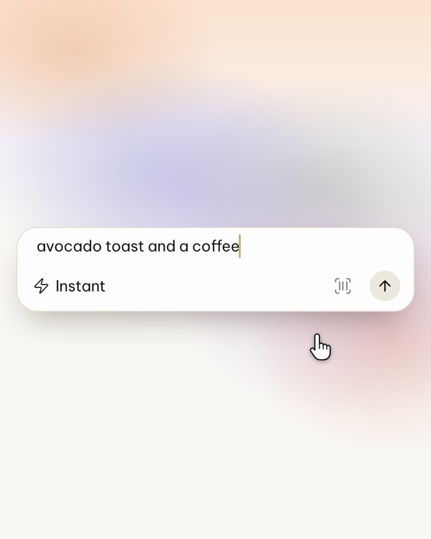
"avocado toast and a coffee"
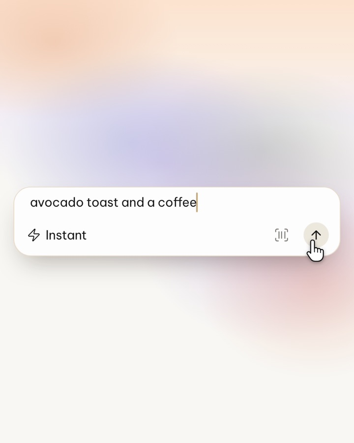
Tap Send.
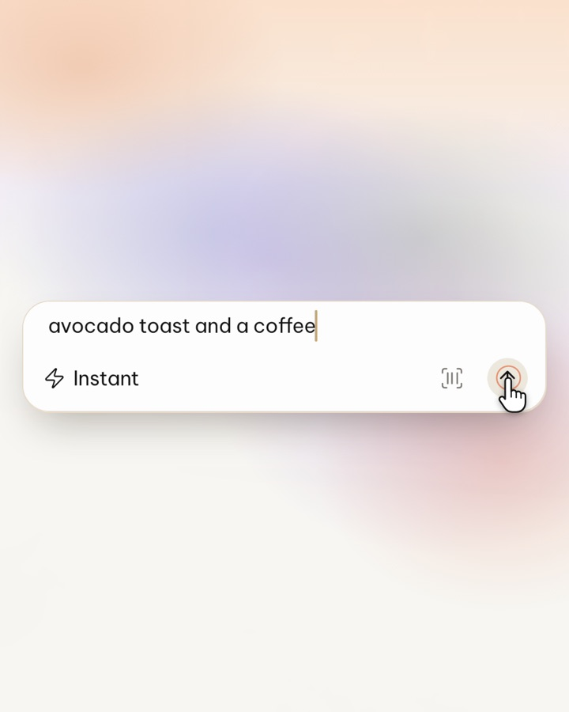
Sent.
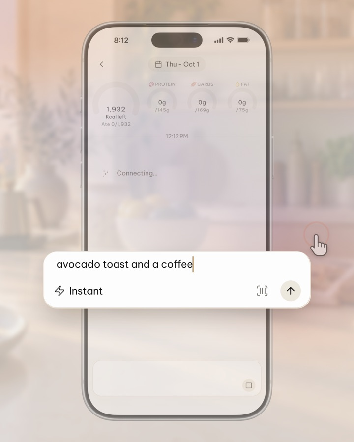
The box morphs into the phone; the morning kitchen fades in.
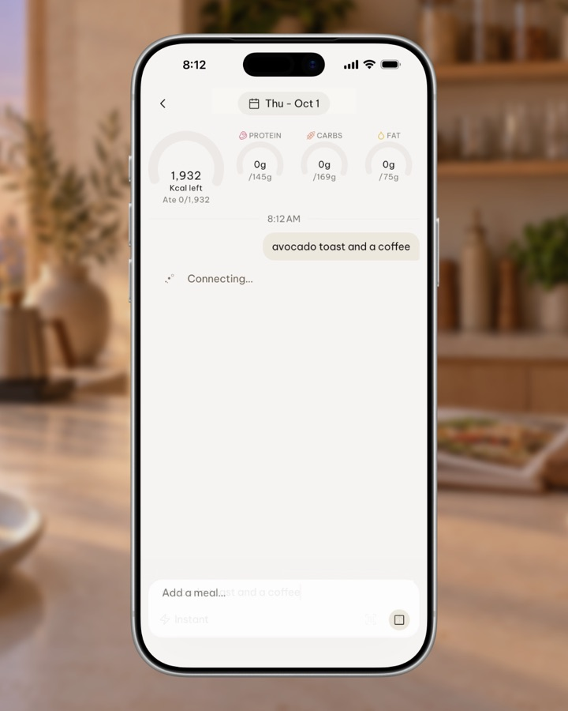
The whole phone: "Connecting…"
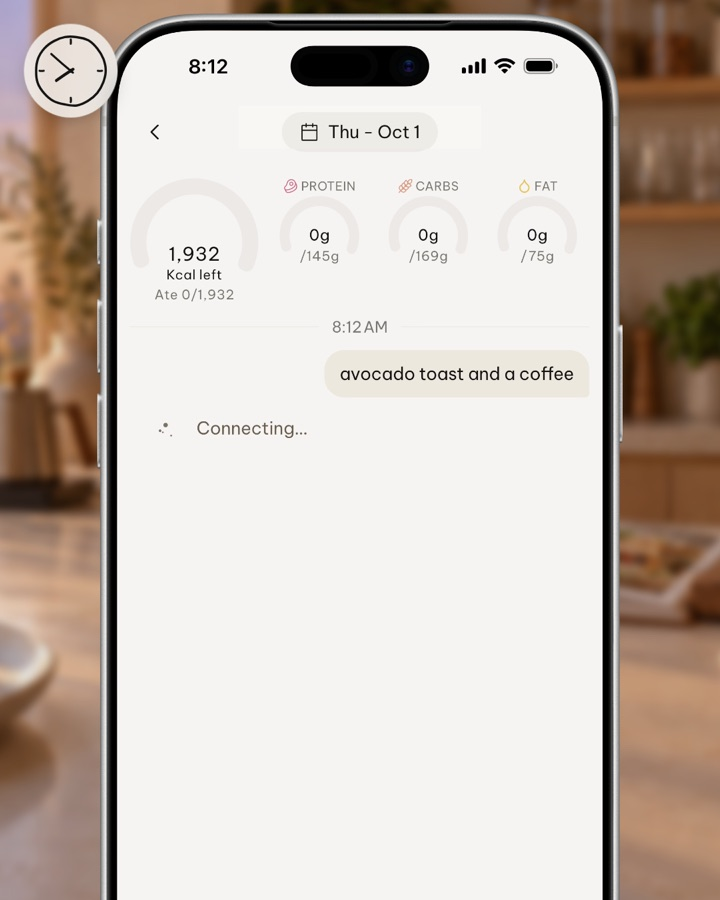
The camera settles on the message.
"Crunching…"; the rows are waiting.
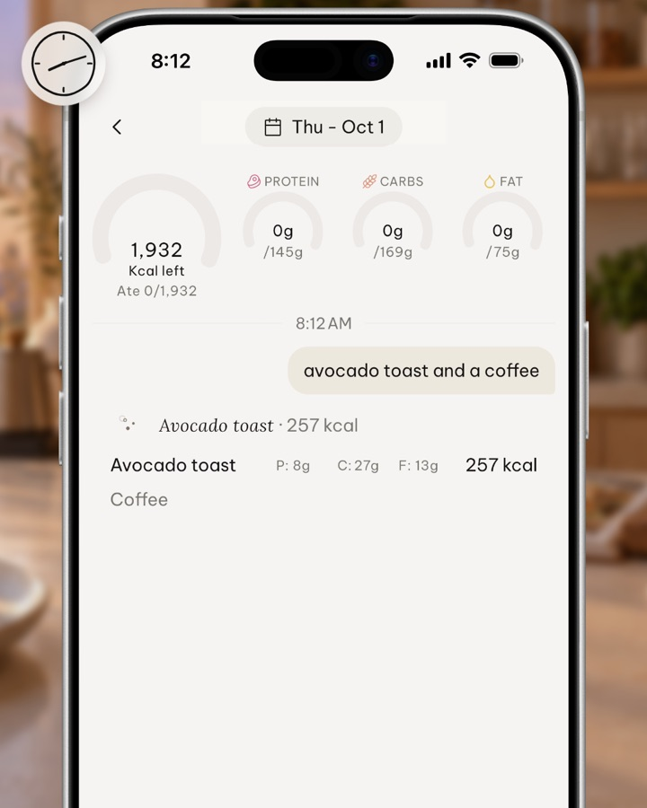
Avocado toast lands: 257 kcal.
Coffee lands: 2 kcal.
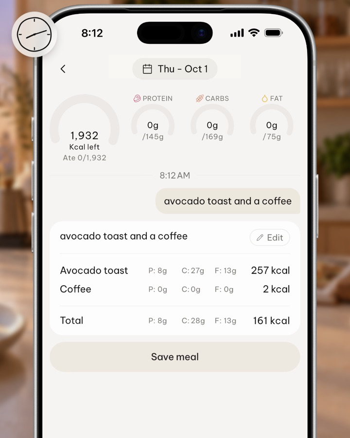
The card closes; the total counts up.
The careless result: 259 kcal.
Held.
"Kallo pays attention to details that matter."